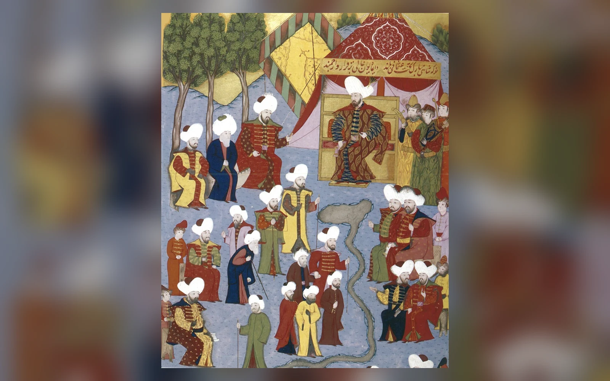
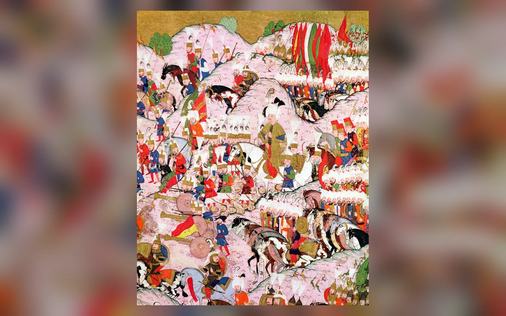
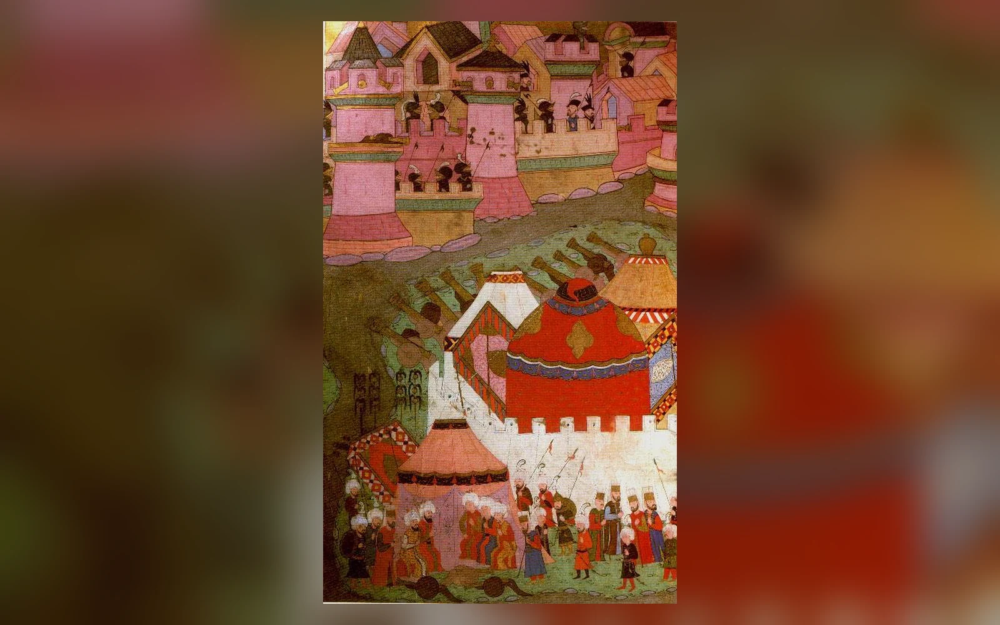
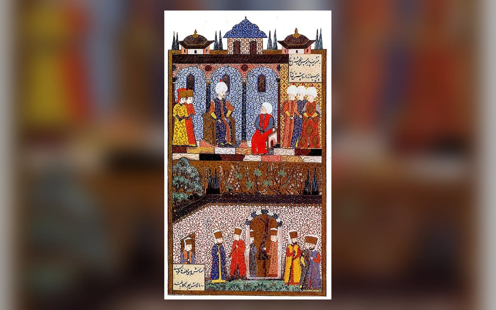
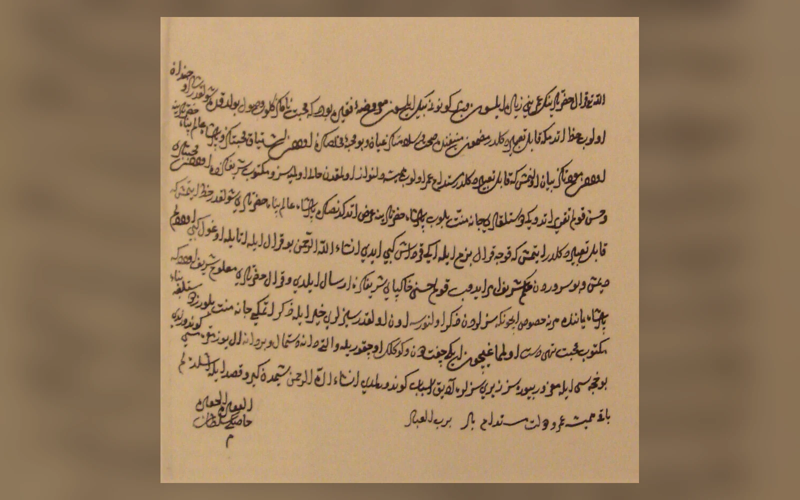
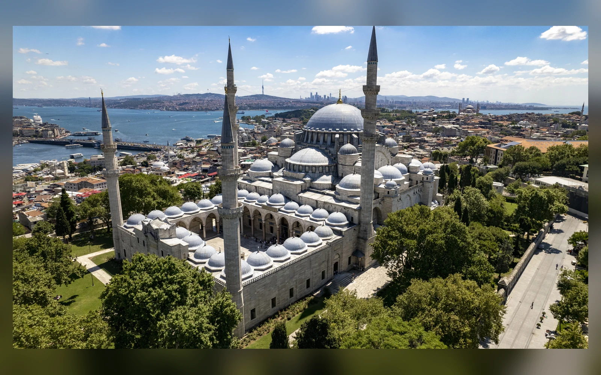
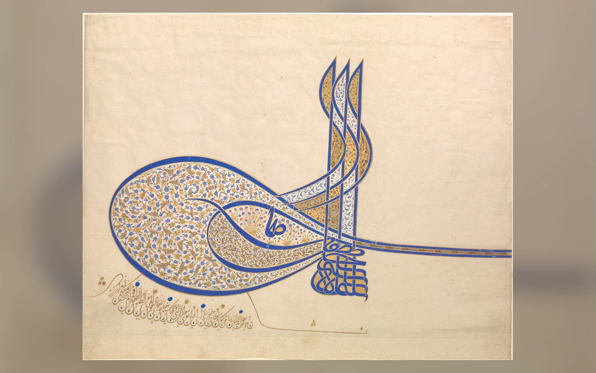
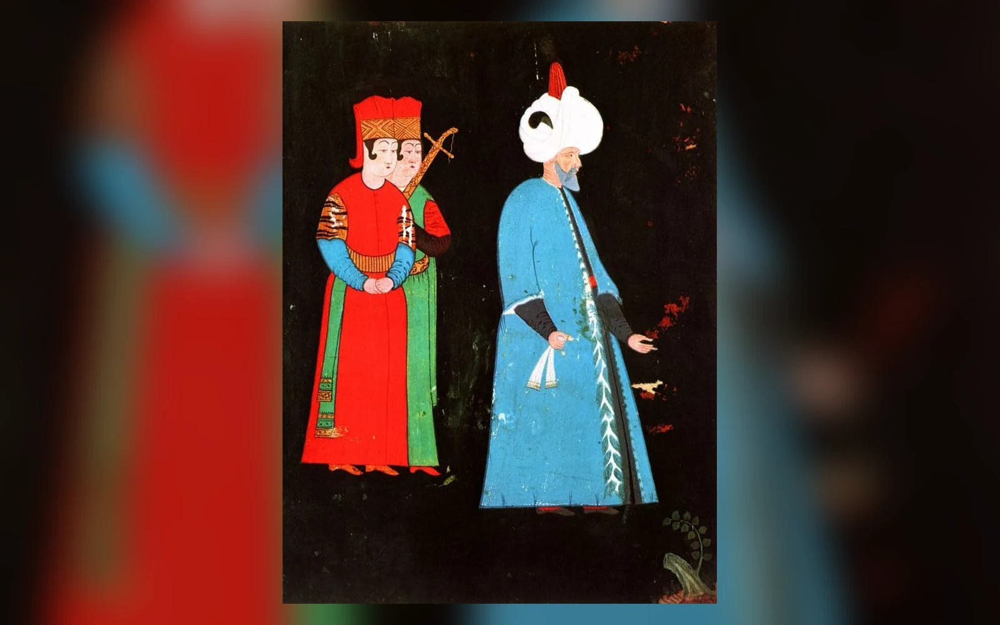

6 Ekim 1553'te Konya Ereğlisi yakınındaki Osmanlı ordugâhında Şehzade Mustafa babasının otağına girdi ve bir daha canlı çıkmadı. Yaklaşık on üç yıl sonra, 1566'da bu kez Kanuni Sultan Süleyman'ın kendi ölümü Zigetvar önündeki ordudan bir süre gizlenecekti. Bu iki olayın arasında Osmanlı tarihinin en uzun padişah saltanatı, Belgrad'dan Bağdat'a uzanan seferler, Habsburg ve Safevî rekabeti, Barbaros Hayreddin Paşa'nın Akdeniz siyaseti, Süleymaniye Külliyesi, Hürrem Sultan'la sıra dışı bir hanedan evliliği ve imparatorluğun geleceğini belirleyen sert veraset kararları vardı.
Kanuni Sultan Süleyman, 1520'den 1566'ya kadar yaklaşık kırk altı yıl hüküm süren onuncu Osmanlı padişahıdır. Batı Avrupa'da kendi çağında "Muhteşem" diye anılırken bugün Türkçede onunla özdeşleşen "Kanuni" sıfatının yaygın kullanımı daha geç bir tarihte yerleşmiştir. Önemi yalnız uzun süre tahtta kalmasından veya çok sayıda sefere çıkmasından kaynaklanmaz. Onun döneminde Osmanlı Devleti Orta Avrupa, Akdeniz ve Ortadoğu güç mücadelelerinin merkezî aktörlerinden biri hâline geldi; bürokrasi ve hukuk uygulamaları daha sistemli bir görünüm kazandı; saray, mimari ve sanat hükümdarlığın ihtişamını temsil eden güçlü araçlara dönüştü.
Fakat bu saltanatı yalnız "altın çağ" olarak okumak eksiktir. Büyük seferler büyük maliyetler doğurdu. Macaristan meselesi onlarca yıl çözülemedi. Safevî ordusunu kesin bir meydan savaşında yok etmek mümkün olmadı. Şehzade Mustafa ve daha sonra Şehzade Bayezid'in öldürülmesiyle sonuçlanan veraset krizleri yaşandı. Kanuni'nin çok yakınındaki İbrahim Paşa bir gece sarayda boğduruldu. Televizyon dizilerinin dramatik dili bu olayları çoğu kez Hürrem Sultan'ın entrikaları ve özel konuşmalar üzerinden anlatır. Belgeler ise güçlü bir hükümdar, güçlü kurumlar, rekabet eden saray ve askerî çevreler ve kesin bir veraset kuralının bulunmadığı daha karmaşık bir düzen gösterir.
Doğumu, Ailesi ve Şehzadelik Yılları
Feridun Emecen'in TDV İslâm Ansiklopedisi'ndeki değerlendirmesine göre Süleyman'ın en güvenilir kabul edilen doğum tarihi 6 Kasım 1494, doğum yeri Trabzon'dur. XVI. yüzyıl kaynaklarında farklı tarihler de bulunduğu için bu konuda kaynak farkını bütünüyle yok saymamak gerekir. Babası o sırada Trabzon sancak beyi olan Şehzade Selim, daha sonra Yavuz Sultan Selim adıyla padişah olacaktı. Annesi Hafsa Sultan'dır.
Hafsa Sultan'ın kökeni popüler anlatıda uzun süre Kırım Hanı Mengli Giray'ın kızı olarak verildi. Güncel araştırmalarda bu kimlik güvenilir kabul edilmez. Onu Kırım hanedanına veya Dulkadıroğulları ailesine kesin biçimde bağlamak için yeterli dayanak yoktur. Hanedan kadınlarının kökenleri hakkındaki sonraki soy hikâyeleri, siyasi ilişkileri daha düzenli gösterebildiği için kaynakların tarihine dikkat etmek gerekir.
Süleyman çocukluğunu Trabzon'da geçirdi ve saray çevresinde eğitim aldı. Kaynaklarda Hayreddin Efendi hocası olarak geçer. Kefe ve özellikle Manisa'daki şehzadelik görevi ona taşra yönetimi deneyimi kazandırdı. Osmanlı şehzadeliği yalnız ders gören bir veliahtlık değildi. Sancaktaki şehzade kendi idari çevresiyle vergi, güvenlik, atama ve merkezle yazışma gibi işlerin içinde bulunuyordu. Bu tecrübe, Süleyman'ın 1520'de tahta çıktığında yönetim dünyasına bütünüyle yabancı olmadığını gösterir.
Süleyman yaklaşık yirmi beş yaşında tahta çıktığında babası Selim'in sekiz yıllık saltanatının bıraktığı büyük mirası devraldı. Çaldıran Safevîlere karşı Osmanlı gücünü göstermiş; Suriye ve Mısır'ın Memlüklerden alınması devletin gelir tabanını, ticaret yollarıyla ilişkisini ve İslam dünyasındaki konumunu genişletmişti. Süleyman küçük bir sınır devleti değil, büyük hazineye, deneyimli askerî kadrolara ve Balkanlar'dan Mısır'a uzanan topraklara sahip bir imparatorluk devraldı.

Bu miras onun başarılarını küçültmez; başarıların başlangıç noktasını doğru yere koyar. Belgrad'a yürüyen orduyu, Rodos'u kuşatan donanmayı veya Mohaç'a giden lojistik sistemi Süleyman sıfırdan yaratmadı. Kapıkulu ordusu, timar düzeni, tersaneler, maliye bürokrasisi ve uzun fetih tecrübesi ondan önce oluşmuştu. Süleyman'ın ayırt edici yönü, devraldığı kapasiteyi yaklaşık yarım yüzyıl boyunca farklı cephelerde kullanması ve bu sırada imparatorluk idaresini kendi saltanatının ihtiyaçlarına göre biçimlendirmesiydi.
Kanuni Sultan Süleyman Kimdir ve Neden Önemlidir?
Süleyman 30 Eylül 1520'de tahta çıktı ve 1566'daki ölümüne kadar hüküm sürdü. Yaklaşık kırk altı yıllık saltanatı Osmanlı padişahları arasındaki en uzun hükümdarlık dönemidir. Kaynaklarda on üç büyük seferle ilişkilendirilir. Bunların önemli bölümünde ordunun başında bizzat bulundu; ancak onun dönemindeki bütün askerî başarıları padişahın şahsen yönettiği seferler gibi anlatmak doğru değildir. Barbaros Hayreddin Paşa'nın deniz harekâtları veya Hint Okyanusu faaliyetleri farklı komuta zincirleriyle yürütüldü.
Avrupa'daki temel rakip Habsburg hanedanıydı. V. Karl'ın geniş hanedan toprakları ve kardeşi Ferdinand'ın Orta Avrupa'daki iddiaları Macaristan'ı Osmanlı-Habsburg mücadelesinin merkezine taşıdı. Doğuda Safevî Şahı I. Tahmasb vardı. Akdeniz'de Venedik ve Habsburg-İspanyol gücüyle rekabet sürüyordu. Kızıldeniz ve Hint Okyanusu'nda Portekiz'in deniz ve ticaret gücü başka bir stratejik sorun yaratıyordu.
Bu kadar geniş cephelerde faaliyet gösterebilmek güçlü mali ve idari örgütlenme gerektiriyordu. Kanuni'nin başarısını yalnız kişisel askerî dehasına bağlamak, orduları besleyen vergi sistemini, yolları ve menzilleri, mühimmat üretimini, kaptanları, beylerbeyilerini, defterdarları ve diplomatik ağı görünmez kılar. Pargalı İbrahim Paşa, Rüstem Paşa, Sokullu Mehmed Paşa, Barbaros Hayreddin Paşa ve Ebüssuûd Efendi aynı düzenin farklı alanlardaki aktörleriydi.
Saltanatın uzunluğu başka bir sonuç daha doğurdu: Kanuni birkaç siyasi kuşağı gördü. Tahta çıktığında genç ve seferci bir hükümdarken son yıllarında yetişkin oğullarının taht beklentileriyle karşı karşıya kalan yaşlı bir padişahtı. İlk yıllardaki İbrahim Paşa merkezli yönetim çevresiyle son yıllardaki Rüstem ve Sokullu çevresi aynı değildi. Hürrem Sultan'ın saraydaki konumu da zaman içinde değişti. Kırk altı yılı tek bir donmuş "Kanuni dönemi" olarak değil, kendi içinde değişen uzun bir hükümdarlık olarak okumak gerekir.
Neden "Kanuni" ve Neden "Muhteşem"?
Bugün Süleyman denildiğinde "Kanuni" sıfatı adının parçası gibi kullanılır. Oysa Feridun Emecen'in belirttiği üzere bu sıfatın hükümdarın kendi çağında bugünkü yaygınlığıyla kullanıldığı söylenemez. "Kanuni" adlandırmasının XVIII. yüzyılda Dimitrie Cantemir'in Osmanlı tarihinde görünmesi ve XIX. yüzyıl tarihçiliğinde yaygınlaşması, unvanın sonraki hafıza tarafından güçlendirildiğini gösterir.
Batılı çağdaşlar ise onu "Magnificent", "Magnifique" veya "Grand Turc" gibi ifadelerle anabiliyordu. Avrupa açısından Süleyman büyük askerî gücü, görkemli sarayı ve Habsburglarla rekabet eden hükümdarlığıyla "Muhteşem"di. Sonraki Osmanlı hafızasında ise adalet ve kanun düzeni idealinin sembolü hâline gelen "Kanuni" öne çıktı.
Bu unvan, Süleyman'ın bütün Osmanlı hukukunu baştan yazdığı anlamına gelmez. Osmanlı düzeninde şer'î hukuk ile hükümdarın ve devletin düzenleme alanını oluşturan örfî hukuk birlikte işliyordu. Kanunnâmeler Süleyman'dan önce de vardı. Onun saltanatında farklı bölgelerdeki uygulamaların derlenmesi, mali ve idari kuralların düzenlenmesi ve kanunların sistemleştirilmesi güçlü bir görünüm kazandı. Nişancı Celâlzâde Mustafa Çelebi gibi bürokratlar ve Şeyhülislam Ebüssuûd Efendi gibi hukukçular bu yapının önemli aktörleriydi.
Ebüssuûd'un rolü özellikle önemlidir. Şer'î hukuk ile devletin örfî düzenlemeleri arasındaki ilişkinin kurulmasında ve arazi-vergi düzeninin hukuki çerçevesinin açıklanmasında etkili oldu. "Kanuni kanunları tek başına yazdı" cümlesi süreci kişiselleştirir. Daha doğru ifade, Süleyman döneminde hükümdarlık otoritesi ile gelişmiş bürokrasinin ortak çalışması sonucunda kanun düzeninin klasik biçiminin güçlenmesidir.
Belgrad, Rodos, Mohaç ve Viyana
Kanuni'nin ilk büyük hedeflerinden biri Belgrad'dı. Şehir 1521'de alındı ve Orta Avrupa seferleri için stratejik üs hâline geldi. Belgrad'ın önemi tek başına bir kalenin fethinden büyüktü: Tuna hattındaki Osmanlı hareket alanını genişletiyor ve Macaristan üzerine yapılacak seferlerin lojistiğini kolaylaştırıyordu.
1522'de hedef Rodos oldu. Saint Jean şövalyelerinin elindeki ada Doğu Akdeniz deniz yolları bakımından önemliydi. Uzun ve zorlu kuşatma sonunda şövalyelerin ayrılmasına izin verildi ve Rodos Osmanlı hâkimiyetine girdi. Bu zafer denizdeki bütün rakiplerin ortadan kalktığı anlamına gelmiyordu; fakat Mısır ile İstanbul arasındaki deniz güzergâhının güvenliği açısından önemliydi.
1526 Mohaç Seferi Avrupa siyasetinde çok daha büyük sonuç yarattı. Osmanlı ordusu 23 Nisan'da İstanbul'dan çıktı. Yağışlar, seller ve ağır arazi koşulları sefer lojistiğini zorladı. 29 Ağustos'ta yapılan Mohaç Muharebesi kısa sürdü ve Macar ordusu ağır yenilgiye uğradı. Kral II. Lajos kaçış sırasında öldü. Zafer, tarihî Macar Krallığı'nın siyasi bütünlüğünü sarstı ve taht meselesini Osmanlılarla Habsburgları doğrudan karşı karşıya getiren uzun bir probleme dönüştürdü.

Mohaç'ın ardından Macaristan tek hamlede tamamen Osmanlı eyaleti olmadı. János Szapolyai ile Habsburg Arşidükü Ferdinand arasındaki taht rekabeti Osmanlı politikasını belirledi. Süleyman başlangıçta Szapolyai'yi destekleyerek Habsburg gücü ile Osmanlı sınırı arasında bağlı bir Macar krallığı oluşturmayı tercih etti. Fakat Macaristan'ın paylaşımı ve kontrolü onlarca yıl süren savaşlara dönüştü.
1529 seferinin sonunda Osmanlı ordusu Viyana önlerine geldi. Popüler anlatıda sefer baştan beri "Viyana'yı fethetme planı" gibi gösterilir. Oysa temel bağlam Macaristan'da Szapolyai'nin konumunu yeniden kurmak ve Ferdinand'ın ilerleyişine karşılık vermekti. Ordu Viyana'ya geç mevsimde ulaştı; kuşatma için özel hazırlanmış ağır topların önemli bölümü zorlu güzergâh ve hava koşulları nedeniyle getirilemedi. Savunma güçlüydü, ikmal güçlükleri arttı ve kuşatma kaldırıldı.

"Kanuni Viyana'yı neden alamadı?" sorusunun cevabı bu nedenle tek değildir. Hava, zamanlama, uzun ikmal hattı, ağır kuşatma araçlarının eksikliği ve savunmanın direnci birlikte değerlendirilmelidir. Viyana'nın alınamaması Osmanlı ordusunun bir anda güçsüzleştiğini göstermediği gibi, kuşatmayı yalnız yağmura bağlamak da yetersizdir.
1532 Alman Seferi V. Karl'ı doğrudan karşılaşmaya çekme arzusuyla bağlantılıydı; beklenen büyük meydan savaşı gerçekleşmedi. Güns çevresindeki direniş ve karşı tarafın stratejisi seferin biçimini değiştirdi. Kanuni'nin Orta Avrupa siyaseti bundan sonra Macaristan'ın denetimi, Ferdinand'la mücadele ve diplomatik düzenlemeler üzerinden sürdü. 1541'de Budin'in doğrudan Osmanlı yönetimine alınması, geçici görünen müdahalelerin kalıcı eyalet düzenine dönüşmesinde kritik eşikti.
Safevîlerle Mücadele, Bağdat ve Amasya Antlaşması
Kanuni'nin doğu siyaseti babası Selim'in bıraktığı Osmanlı-Safevî rekabetinin devamıydı. Mezhep farklılığı önemliydi, fakat mücadele yalnız inanç çatışması değildi. Doğu Anadolu, Azerbaycan, Irak, sınır aşiretleri, ticaret yolları ve yerel bağlılıklar iki imparatorluğun rekabet alanıydı. Şah Tahmasb, Osmanlı ordusunun büyük meydan savaşına zorladığı koşullardan çoğu kez kaçındı; geri çekilme ve ikmal kaynaklarını tahrip etme stratejisi kullandı.
1533--1536 Irakeyn Seferi bu rekabetin en önemli safhalarındandır. İbrahim Paşa önden hareket etti ve Tebriz'e girdi. Kanuni'nin orduya katılmasının ardından harekât Bağdat yönüne çevrildi. Bağdat 1534'te Osmanlı hâkimiyetine girdi. Bu gelişme Irak üzerindeki Osmanlı denetimini güçlendirdi ve Basra Körfezi'ne uzanan siyasetin önünü açtı.
Tebriz'in birkaç kez Osmanlı kuvvetlerince ele geçirilmesi Safevî devletinin ortadan kaldırılması anlamına gelmedi. Tahmasb'ın hareketli savunması ve İran coğrafyasındaki lojistik güçlükler kalıcı ilerlemeyi sınırlandırdı. Büyük ordunun beslenmesi için yalnız askerî zafer değil, su, yem ve erzak gerekiyordu. Safevîlerin yakıp boşaltma taktiği tam bu zayıf noktayı hedefliyordu.
1553'te başlayan Nahçıvan Seferi sırasında Şehzade Mustafa'nın öldürülmesi hanedan krizini doğu seferiyle iç içe geçirdi. Osmanlı ordusu Nahçıvan'a kadar ilerledi, fakat Şah Tahmasb büyük meydan savaşından yine kaçındı. 1555 Amasya Antlaşması iki devlet arasındaki ilk resmî barış olarak kabul edilir. Basra, Bağdat, Şehrizor, Van, Bitlis, Erzurum ve Kars üzerindeki Osmanlı hâkimiyetinin Safevîlerce tanınması anlamına gelen düzenleme yaklaşık yirmi beş yıl sürecek bir barış dönemi yarattı.
Akdeniz, Barbaros ve Hint Okyanusu
Kanuni'nin saltanatını yalnız padişahın katıldığı kara seferleriyle anlatmak imparatorluğun deniz boyutunu eksik bırakır. Barbaros Hayreddin Paşa'nın Osmanlı hizmetine girmesi ve kaptanıderya oluşu Kuzey Afrika ile merkez arasındaki bağı güçlendirdi. 1538 Preveze Deniz Muharebesi'nde Barbaros'un Andrea Doria komutasındaki müttefik donanmaya karşı kazandığı zafer, Osmanlı deniz gücünün Akdeniz'deki ağırlığını belirginleştirdi.

Preveze'yi "Akdeniz sonsuza kadar Osmanlı gölü oldu" biçiminde anlatmak doğru değildir. Venedik, İspanya-Habsburg gücü, Malta şövalyeleri ve başka deniz aktörleri varlığını sürdürdü. Deniz hâkimiyeti sabit bir mülkiyet değil; üsler, donanma, korsanlık, ticaret, ikmal ve diplomasi üzerinden sürekli yeniden kurulan üstünlüktü. Kanuni döneminde Osmanlılar çok güçlü konuma ulaştı, fakat mücadele bitmedi.
Fransa ile ilişkiler Habsburg karşıtı denge siyaseti içinde gelişti. I. François'nın V. Karl karşısında Osmanlı desteği araması erken modern diplomasinin mezhep sınırlarından daha esnek olabildiğini gösterir. Ancak "Kanuni 1536'da Fransa'ya kapitülasyon verdi" cümlesi hukuki bakımdan tartışmasız değildir. 1536'da İbrahim Paşa ile Fransız elçisi Jean de La Forêt arasında hazırlanan metnin onay ve yürürlük statüsü üzerine tartışma vardır; 1569'da II. Selim döneminde verilen ahidnâme ise daha açık belge niteliğindedir. 1536'yı bütün sonraki kapitülasyon rejiminin kesin ve tek başlangıcı saymak basitleştiricidir.
Kızıldeniz ve Hint Okyanusu'nda Portekiz'in varlığı başka bir cephe açtı. Mısır'ın fethinden sonra Osmanlılar Kızıldeniz limanları, Hicaz'ın güvenliği ve Hint ticaretiyle daha doğrudan ilgilenmeye başladı. Hadım Süleyman Paşa'nın 1538 Diu seferi, Pîrî Reis'in faaliyetleri ve Basra-Kızıldeniz eksenindeki girişimler padişahın şahsen komuta ettiği harekâtlar değildi. Portekizlileri Hint Okyanusu'ndan bütünüyle çıkarma hedefi gerçekleşmedi; Osmanlı deniz gücü bölgesel mevziler elde etti fakat okyanus ölçeğindeki rekabetin sınırları da ortaya çıktı.
Hürrem Sultan ile Kanuni'nin Gerçek İlişkisi
Kanuni'nin "eşleri" sorusu modern evlilik anlayışıyla sorulduğunda yanıltıcı olabilir. Hanedan hayatında cariyelik, gözdelik, şehzade anneliği ve nikâhlı eşlik aynı statü değildi. Mahidevran, Şehzade Mustafa'nın annesi olarak hanedanın başlıca kadınlarından biriydi; Gülfem Hatun da saray çevresinde belgelenir. Hürrem Sultan ise Kanuni'nin nikâhladığı ve haseki konumuna yükselttiği kadındı. Kaynakların vermediği resmî evlilik statülerini bu kadınların tamamına uygulamak doğru değildir.
Hürrem Sultan Kanuni döneminin en çok efsaneleştirilen kişisidir. Kökeni konusunda çağdaş ve sonraki kaynaklar farklı ayrıntılar verir. Ruthenia bölgesiyle bağlantısı güçlü kabul edilse de "Alexandra Lisowska" gibi çok kesin biyografik kimliklerin kaynak değeri aynı değildir. Saraya köle olarak geldiği, Müslüman olduğu, "Hürrem" adını aldığı ve Süleyman'ın gözdesi hâline geldiği genel çerçevede açıktır.
Hürrem'in sıra dışı konumunu yalnız "padişah ona âşık oldu" cümlesiyle açıklamak yetersizdir. Önceki hanedan pratiğinde padişahların cariyelerle resmî nikâh yapmaması ve bir cariyeden genellikle bir erkek çocuk sahibi olunduktan sonra şehzade annesinin oğluyla sancağa gitmesi gibi ilkeler etkiliydi. Hürrem birden fazla erkek çocuk dünyaya getirdi, sarayda kaldı ve Süleyman tarafından nikâhla eş statüsüne yükseltildi. Bu, hanedan pratiğinde önemli değişimdi.
İlişkilerinin kişisel boyutuna ilişkin en somut kanıtlardan biri mektuplardır. Hürrem'in seferdeki Süleyman'a yazdığı mektuplar sevgi, özlem, saray haberleri ve siyasi-diplomatik meselelerin iç içe geçtiğini gösterir. Hürrem ayrıca vakıflar ve hayır eserleriyle kamusal bir hanedan kimliği kurdu. İstanbul'daki Haseki Külliyesi, Ayasofya yakınındaki hamam ve Kudüs'teki imaret gibi yapılar onun himaye ağının maddi izleridir. Safevî hanedanıyla yazışması diplomatik iletişimde rol alabildiğini de gösterir.

Bunlardan "Hürrem devleti gizlice yönetiyordu" sonucu çıkmaz. Padişaha erişim, hükümdarın çocuklarının annesi olmak, damat ve devlet adamlarıyla kurulan ilişkiler, vakıf gelirleri ve mektuplaşma gerçek güç araçlarıydı. Fakat son karar makamı padişahtı ve divan, sadrazam, askerî yapı, ulema ve taşra idaresi Hürrem'in kişisel kontrolündeki kurumlar değildi.
Mahidevran ile Hürrem arasındaki rekabetin tarihsel zemini vardır; ikisi farklı şehzadelerin anneleri olarak veraset düzeninde birbirine rakip konumdaydı. Ancak televizyon dizilerinde gösterilen özel konuşmalar, fiziksel çatışmalar ve gündelik entrikaların çoğu belgelenebilir tarihsel bilgi değildir. Sarayda rekabetin varlığını bilmek, o rekabetin her sahnesini bildiğimiz anlamına gelmez.
Pargalı İbrahim Paşa Neden Öldürüldü?
İbrahim Paşa’nın hayatı Osmanlı sarayında hükümdara yakınlığın sağlayabileceği olağanüstü yükselişi ve aynı yakınlığın yaratabileceği kırılganlığı birlikte gösterir. Kökeni hakkında farklı rivayetler vardır; gençliğinde Manisa'da Şehzade Süleyman'ın hizmetinde bulunduğu ve onun yakın adamlarından biri hâline geldiği bilinir. Süleyman tahta çıktıktan sonra hızla yükseldi ve 1523'te teamülleri zorlayan bir sıçramayla veziriazam oldu.
İbrahim yalnız saray dostu değildi. Mısır'daki idari düzenlemelerden Mohaç Seferi'ne, Habsburg elçileriyle müzakerelerden doğu seferine kadar imparatorluk siyasetinin merkezinde görev yaptı. 1533 Habsburg görüşmelerindeki dili Osmanlı hükümdarlığının üstünlük iddiasını diplomatik protokole taşıyordu. Irakeyn Seferi sırasında yetkisi daha da genişledi ve "serasker sultan" gibi dikkat çekici unvanlar kullandı.
Popüler kültür İbrahim'i çoğu kez Kanuni'nin kız kardeşi Hatice Sultan'ın eşi olarak gösterir. Bu konu tarihçilikte tartışmalıdır. Eski literatürde evlilik kabul edilmiş, İsmail Hakkı Uzunçarşılı bunun aksini savunmuş, Ebru Turan'ın araştırması 1524 evliliğinin kimliği üzerine kaynakları yeniden değerlendirmiştir. Dolayısıyla dizinin Hatice-İbrahim evliliğini tartışmasız biyografik gerçek gibi kullanmak güvenli değildir.
İbrahim Paşa 14--15 Mart 1536 gecesi sarayda boğduruldu. Neden öldürüldüğüne ilişkin tek ve açık bir idam gerekçesi belgesi yoktur. Kaynaklar onun artan gücü ve ihtişamı, kullandığı siyasi unvanlar, Irakeyn Seferi'ndeki uygulamaları, Defterdar İskender Çelebi'nin idamındaki rolü, saray içindeki düşmanlıklar ve hükümdarın güvenini kaybetmesi gibi farklı unsurları öne çıkarır. Hürrem Sultan'ın İbrahim'e karşı olduğu iddiası da kaynaklarda yer alır; fakat infazı yalnız Hürrem'in entrikasına indirgemek padişahın kararını ve İbrahim'in yıllar içinde kazandığı sıra dışı kurumsal gücü gözden kaçırır.
En önemli nokta şudur: İbrahim'i öldürten Kanuni'ydi. Hürrem veya başka bir saray aktörü padişahın algısını etkilemiş olabilir; ancak infaz emrinin siyasi sorumluluğunu başka bir karaktere devretmek karar mekanizmasını tersine çevirir. İbrahim'in hikâyesi, hükümdara olağanüstü yakınlığın Osmanlı siyasetinde bağımsız bir güvence sağlamadığını gösterir.
Şehzade Mustafa Neden Öldürüldü?
Şehzade Mustafa’nın ölümü Kanuni saltanatının en tartışmalı kararıdır. Mustafa, Süleyman'ın Mahidevran'dan doğan oğluydu ve uzun süre hanedanın en güçlü taht adaylarından biri olarak görüldü. Manisa ve Amasya sancaklarında görev yaptı. Askerî çevrelerde ve toplumun bazı kesimlerinde itibarlı olduğuna dair Osmanlı ve yabancı gözlemcilerden bilgiler vardır. Fakat Osmanlı tahtında "veliaht" statüsü modern monarşilerdeki gibi hukuken kesin değildi. Padişah öldüğünde hayatta kalan şehzadeler arasındaki mücadele ihtimali devam ediyordu.
1550'lere gelindiğinde sorun yalnız Mustafa'nın sevilen şehzade olması değildi. Kanuni yaşlanıyordu; Hürrem'in oğulları Selim ve Bayezid de yetişkin taht adaylarıydı. Mustafa'nın askerî destek kazanması padişah açısından kendi otoritesi ve gelecekteki veraset için tehdit olarak algılanabilirdi. Zahit Atçıl'ın Osmanlı, Venedik, Habsburg, Fransız ve Fars kaynaklarını karşılaştıran çalışması, olayı yalnız Hürrem-Rüstem komplosuyla açıklamanın yetersiz olduğunu; Süleyman'ın şehzade lehine gelişen siyasi desteği kendi hükümdarlık otoritesi bakımından tehlikeli görmesinin önemli olduğunu savunur.
Rüstem Paşa'nın Mustafa aleyhine padişaha haberler gönderdiği ve Hürrem çevresinin kendi oğullarının geleceği bakımından Mustafa'yı rakip gördüğü kaynaklarda güçlü biçimde yer alır. Ancak Mustafa'nın tartışmasız biçimde isyan hazırladığına dair herkesçe kabul edilen açık belge yoktur. Babasına yazdığı mektuplar, affını ve yakınlığını yeniden kazanma çabaları, ilişkilerinin uzun süredir gergin olduğunu gösterir. Safevîlerle ilişki kurduğu iddiaları ve asker içindeki desteği padişahın şüphesini artırmış olabilir; fakat bunları kesinleşmiş darbe planı gibi sunmak kanıtın sınırını aşar.
1553 Nahçıvan Seferi sırasında Kanuni İstanbul'dan ayrıldı. Mustafa Amasya'dan ordusuyla gelip babasının ordugâhına katıldı. 6 Ekim 1553'te Konya Ereğlisi yakınındaki Aktepe/Akhöyük civarında padişahın otağına girdiğinde cellâtlar tarafından boğuldu. Bazı anlatılar Kanuni'nin perde arkasından infazı izlediğini veya oğluyla son kez konuştuğunu aktarır. Bu ayrıntıların güvenilirliği aynı değildir; özel sahneleri kesin tarihsel gerçek gibi yeniden kurmak doğru olmaz.
İnfaz orduda büyük hoşnutsuzluk yarattı. Taşlıcalı Yahyâ'nın mersiyesi olayın çağdaş yankısının en bilinen edebî örneklerinden biridir. Rüstem Paşa kısa süre sonra sadrazamlıktan alındı; fakat iki yıl sonra yeniden göreve getirildi. Bu durum bütün suçu Rüstem'e yükleyen basit anlatıyı da sorgulatır.
Mustafa'nın suçlu veya tamamen masum olduğuna dair mutlak hüküm vermek tarihçinin elindeki kanıttan fazlasını iddia etmek olur. Bildiğimiz şey, Mustafa'nın güçlü bir taht adayı olduğu, padişahla ilişkisinin bozulduğu, askerî ve toplumsal destek algısının Süleyman açısından siyasi risk oluşturduğu ve infaz kararının nihai olarak Kanuni tarafından verildiğidir. Bu siyasi mantığı açıklamak öldürme kararını ahlaken haklı çıkarmak değildir.
Kanuni'nin Çocukları ve Taht Mücadelesi
Kanuni'nin çocuklarının sayısı popüler listelerde değişebilir; küçük yaşta ölen çocukların ve erken kaynaklardaki isimlerin farklı aktarılması bunun nedenlerinden biridir. Saltanatının başında Mahidevran'dan Mustafa hayattaydı; kaynaklar Murad ve Mahmud adlı oğulların da küçük yaşta öldüğünü bildirir. Hürrem Sultan'dan Mehmed, Mihrimah, küçük yaşta ölen Abdullah, Selim, Bayezid ve Cihangir dünyaya geldi.
Şehzade Mehmed Hürrem'in oğulları arasında ilk büyük umut olarak öne çıktı ve Manisa sancağına gönderildi; 1543'te genç yaşta öldü. Onun adına İstanbul'da Şehzade Camii ve külliyesi yaptırılması, Kanuni'nin oğluna verdiği önemin mimari hafızaya dönüşmesidir. Mustafa'nın 1553'te öldürülmesiyle hanedanın yetişkin erkek adayları arasında Hürrem'in oğulları belirleyici kaldı.
Cihangir 1553'te Mustafa'nın ölümünden kısa süre sonra Halep'te öldü. Popüler anlatıda üvey kardeşinin idamına duyduğu üzüntüden öldüğü söylenir. Cihangir'in sağlık sorunları bilindiği için ölümünü yalnız kedere bağlamak romantikleştirilmiş açıklamadır. Mustafa'nın ölümünün onu etkilemiş olması mümkündür; fakat tıbbi ölüm nedenini tek duygusal olaya indirmek için yeterli kanıt yoktur.
Hürrem 1558'de öldüğünde geriye Selim ve Bayezid arasındaki rekabet kaldı. İki şehzade arasında açık çatışma çıktı. Bayezid 1559'da yenildikten sonra oğullarıyla Şah Tahmasb'a sığındı. Bu olay Osmanlı hanedan meselesini doğrudan Osmanlı-Safevî diplomasisine taşıdı. Uzun pazarlıkların ardından Bayezid ve oğulları 1561'de öldürüldü.
Böylece Kanuni'nin ölümüne gelindiğinde tahtın önündeki tek yetişkin hanedan adayı Selim'di. II. Selim'in 1566'da görece sorunsuz cülûsu onun bütün kardeşlerinden daha yetenekli olduğunun kanıtı değil; yıllar süren veraset mücadelesinin sonunda rakipsiz kalmasının sonucuydu. Kanuni saltanatının aile hikâyesi, kesin veraset kuralının bulunmamasının hanedan üzerindeki ağır bedelini gösterir.
Muhteşem Yüzyıl Dizisi Ne Kadar Gerçek?
Muhteşem Yüzyıl tarihsel kişileri ve büyük olayları temel alan televizyon dramasıdır; belgesel değildir. Kanuni, Hürrem, Mahidevran, İbrahim Paşa, Şehzade Mustafa, Mihrimah Sultan ve Rüstem Paşa gerçek kişilerdir. Belgrad, Mohaç, İbrahim'in idamı, Mustafa'nın öldürülmesi ve Hürrem'in saraydaki yükselişi gibi ana olayların tarihsel çekirdeği de gerçektir. Fakat özel konuşmalar, aşk üçgenleri, gizli buluşmalar ve gündelik çatışmalar büyük ölçüde senaryo alanıdır.
Hürrem ile Kanuni arasında güçlü kişisel bağ bulunduğunu mektuplar destekler. Kanuni'nin Hürrem'le nikâhlanması tarihsel olarak önemlidir. Buna karşılık çiftin kapalı odalarda tam olarak ne konuştuğunu, her devlet kararını birlikte planlayıp planlamadığını veya Hürrem'in belirli bir olay gecesi hangi cümleyi söylediğini bilemeyiz. Dizinin kaynakların sustuğu alanı dramatik sahnelerle doldurması normaldir; sorun bu sahnelerin tarihsel belge gibi hatırlanmasıdır.
Mahidevran-Hürrem rekabetinin hanedan siyaseti bakımından gerçek zemini vardır. İkisinin oğulları aynı taht sisteminin rakip adaylarıydı. Fakat dizideki her yüzleşmenin, kavganın veya cezalandırmanın arşiv kaydı bulunduğu düşünülmemelidir. Harem kaynakları özellikle gündelik özel yaşam konusunda sınırlıdır.
İbrahim Paşa'nın Kanuni'ye olağanüstü yakınlığı, hızlı yükselişi ve 1536'da idamı gerçektir. Buna karşılık Hatice Sultan'la evliliği güncel tarihçilikte tartışmalıdır. Dolayısıyla dizinin bu evlilik üzerine kurduğu geniş romantik hikâye tartışmasız biyografi olarak kullanılamaz.
Şehzade Mustafa'nın infazının Kanuni'nin emriyle 1553'te gerçekleştiği kesindir. Rüstem ve Hürrem hakkındaki suçlamaların tarihsel kaynakları vardır. Fakat bütün süreci tek bir sahte mektuba, kıskançlığa veya Hürrem'in kusursuz planına indirgemek kaynakların sunduğu veraset ve otorite sorununu ortadan kaldırır.
Firuze Hatun dizinin tarihsel gerçeklikle en çok karıştırılan karakterlerinden biridir. Dizideki biçimiyle Kanuni'nin Hürrem'e rakip büyük aşkı olan Firuze'nin tarihsel varlığını doğrulayan güvenilir çağdaş belge yoktur. Kaynak sessizliği herhangi bir olayın matematiksel olarak imkânsız olduğunu göstermez; fakat belirli bir Firuze hikâyesini gerçek saymak için kanıt bulunmadığından karakter dizideki biçimiyle kurmaca kabul edilmelidir.
Dizide zaman çizelgesi dramatik ihtiyaçlara göre sıkıştırılır. Tarihte yıllar arayla gerçekleşen olaylar birbirine yakın gösterilebilir; aynı anda sarayda bulunmayan kişiler ortak sahnelere sokulabilir. Haremdeki kıyafetler ve mekânlar da modern izleyicinin görsel beklentisine göre yorumlanır. Topkapı Sarayı'nın XVI. yüzyıldaki kullanımı ile ekranda yaratılan sürekli kalabalık sosyal hayat bire bir aynı değildir.
Dolayısıyla Muhteşem Yüzyıl "tamamen yalan" değildir; gerçek kişileri, savaşları ve hanedan krizlerini kullanan tarihsel kurmacadır. Tarih olayın gerçekleştiğini ve belgelenebilen bağlamını söyleyebilir; senaryo ise kaynakların sustuğu yerde karakterlerin ne düşündüğünü, ne konuştuğunu ve özel hayatlarının nasıl ilerlediğini yaratır.
Sanat, Mimari ve Muhibbî
Kanuni'nin saltanatı yalnız savaşlar ve hanedan infazlarıyla tanımlanamaz. XVI. yüzyıl ortası Osmanlı saray sanatlarının, mimarinin, kitap üretiminin, hat ve bezeme sanatlarının güçlü kurumsal himaye gördüğü dönemdi. Saray nakkaşhanesinde farklı geleneklerden sanatçılar çalışıyor, imparatorluğun görsel dili yazma eserlerden çinilere ve dokumalara kadar geniş alanda şekilleniyordu.
Dönemin en büyük mimari adı Mimar Sinan'dır. Süleymaniye Külliyesi 1550--1557 arasında İstanbul'un siluetine yerleşti. Yapıyı yalnız büyük bir cami olarak görmek eksiktir. Medreseler, imaret, darüşşifa, hamam ve başka birimlerden oluşan külliye ibadet, eğitim, yardım, sağlık ve şehir ekonomisini aynı vakıf sistemi içinde birleştiriyordu. İstanbul'un yüksek bir noktasındaki konumu hükümdarlık temsilinin parçasıydı.

Süleymaniye, Kanuni'nin adalet ve düzen imgesiyle mimari ihtişamını bir araya getiren hanedan anıtına dönüştü. Süleyman ve Hürrem'in türbelerinin burada bulunması külliyeyi hanedan hafızasının merkezlerinden biri yaptı. Mimari himaye yalnız padişaha ait değildi. Hürrem, Mihrimah Sultan ve Rüstem Paşa gibi saray çevresindeki güçlü kişiler de cami, hamam ve hayır eserleri yaptırdı. Böylece mimari, statünün ve kamusal meşruiyetin dili oldu.
Kanuni aynı zamanda şairdi. En çok "Muhibbî" mahlasıyla şiir yazdı; "Muhib" ve "Meftûnî" mahlasları da kaynaklarda geçer. Divanındaki şiirler aşk, dünya, hükümdarlık, sağlık, savaş ve tasavvuf gibi temaları içerir. Ona atfedilen en meşhur beyitlerden "Halk içinde mu'teber bir nesne yok devlet gibi / Olmaya devlet cihanda bir nefes sıhhat gibi" güvenilir divan geleneğinde Muhibbî'ye aittir. Buradaki "devlet" yalnız modern devlet kurumunu değil, saadet ve talih anlamlarını da taşır.
Kanuni çağının "muhteşem" görünmesinde sanatın rolü büyüktür. Törenler, elçi kabulleri, minyatürlü tarih kitapları, tuğralar, kaftanlar, silahlar ve anıtsal yapılar hükümdarlığı görünür kılıyordu. İmparatorluk yalnız savaşarak güç göstermiyor; gücünü estetik ve törensel düzene dönüştürüyordu.
Kanuni'nin Hükümdarlığını Ayakta Tutan Devlet Düzeni
Kanuni'nin hayatını yalnız padişahın verdiği emirler üzerinden okumak kırk altı yıl çalışan devlet mekanizmasını görünmez kılar. Osmanlı ordusunun İstanbul'dan Budin'e veya Bağdat'a ulaşabilmesi için aylar öncesinden güzergâh planlanıyor, menziller hazırlanıyor, köprüler kuruluyor, zahire ve hayvan yemi tedarik ediliyordu. Topların, barutun, asker maaşlarının ve donanmanın maliyeti merkezî hazine ile eyalet gelirlerini aynı büyük organizasyonun parçası hâline getiriyordu.
Divan-ı Hümâyun bu nedenle önemlidir. Veziriazam ve vezirler, kazaskerler, defterdarlar ve nişancı devletin farklı işlevlerini yürütüyordu. Padişahın divan toplantılarıyla ilişkisi zamanla değişse de nihai hükümdarlık otoritesi sarayda kalıyordu. İbrahim Paşa'nın olağanüstü yükselişi, Rüstem Paşa'nın iki kez sadrazam olması veya Sokullu Mehmed Paşa'nın son yıllarda güç kazanması, Kanuni saltanatının farklı safhalarında yürütme çevresinin değiştiğini gösterir.
Timar sistemi taşradaki askerî ve mali örgütlenmenin temel parçalarındandı. Belirli vergi gelirleri karşılığında atlı asker yetiştirilmesi, merkezî hazinenin bütün askerî maliyeti nakit karşılamadan büyük sefer orduları oluşturabilmesine yardım ediyordu. Bunun yanında maaşlı kapıkulu birlikleri, özellikle yeniçeriler, merkezî hükümdarlığın doğrudan askerî gücüydü. Topçu ve cebeci teşkilatları kuşatma savaşlarında kritik rol oynuyordu. Mohaç'ın kısa süren meydan sonucu, arkasındaki aylarca hazırlık olmadan anlaşılamaz.
Deniz gücü de tersane ve insan kaynağı gerektiriyordu. Barbaros'un ünü haklı olarak komutanlığıyla ilişkilendirilir; fakat Preveze'deki güç yalnız bir denizcinin yeteneğinden doğmadı. İstanbul tersanesi, Kuzey Afrika'daki denizci ağları, gemi yapımı için malzeme tedariki, kürekçi ve levent temini ile kıyı üsleri birlikte çalışıyordu. Kanuni dönemindeki Akdeniz başarısı bu kurumsal kapasitenin de ürünüydü.

Hukuk alanında benzer ortak üretim görülür. Padişah kanun koyma otoritesinin merkezindeydi; fakat düzenlemeleri kaleme alan, kayıt altına alan ve uygulayan geniş bürokrasi vardı. Ebüssuûd Efendi'nin şeyhülislamlığı şer'î hukuk ile devletin örfî düzenlemeleri arasındaki ilişkiyi güçlendiren örneklerdendir. Kanuni'nin "adalet" imgesi yalnız kişisel karakter anlatısı değil, vergi ve arazi düzeninin meşru ve öngörülebilir gösterilmesiyle ilgili hükümdarlık programıydı.
Saltanatın son yıllarında sistemin sınırları da görünür hâle geliyordu. Uzun savaşlar pahalıydı; sınır kalelerinin sürekli tutulması gerekiyordu. Nüfus ve fiyat hareketleri, askerî teknolojideki değişim ve nakit ihtiyacının artması sonraki kuşakların daha açık biçimde karşılaşacağı sorunların zeminini oluşturdu. Kanuni'nin 1566'da ölümüyle "mükemmel sistemin bir anda bozulduğu" düşüncesi tarihsel dönüşümü açıklamaz.
Kanuni'nin gerçek başarısını anlamanın daha sağlam yolu onu kurumların üstünde tek başına duran kahraman değil, güçlü hanedan hükümdarı olarak bu kurumları kullanabilen siyasi aktör şeklinde görmektir. Aynı yaklaşım başarısızlıklar için de gereklidir. Viyana'nın alınamaması tek komutan hatasına, Safevîlerin ortadan kaldırılamaması tek yanlış karara veya Hint Okyanusu'ndaki sınırlı sonuçlar padişahın ilgisizliğine indirgenemez. Coğrafya, lojistik, rakip devletlerin stratejileri ve kaynak sınırları hükümdarın iradesinden bağımsız gerçekliklerdi.
Kanuni Sultan Süleyman Nasıl Öldü?

1566'da Kanuni yaklaşık yetmiş iki yaşındaydı ve sağlık sorunları vardı. Buna rağmen son büyük seferinde ordunun başında Macaristan'a hareket etti. Hedef Zigetvar'dı. Kale Miklós Zrínyi komutasındaki savunma tarafından dirençle korunuyordu. Kuşatma sürerken padişah 6'yı 7 Eylül'e bağlayan gece otağında öldü; kaynak ve takvim hesaplarında küçük tarih farkları görülebilir.
Ölümün hemen bütün orduya açıklanmaması askerî ve siyasi gerekçelere dayanıyordu. Kuşatma henüz tamamlanmamıştı; hükümdarın ölümünün ordunun moralini ve disiplinini bozması, yeni padişahın cülûsu gerçekleşmeden otorite boşluğu yaratması mümkündü. Sadrazam Sokullu Mehmed Paşa ve dar çevre haberi kontrollü tuttu. Zigetvar kısa süre sonra Osmanlıların eline geçti.
Kanuni'nin ölüm nedeni için modern tıbbi kesinlik üretmek mümkün değildir. Yaşlılığı ve rahatsızlıkları kaynaklarda yer alır; belirli hastalığı laboratuvar kesinliğinde teşhis etmek doğru olmaz. Cenazesi İstanbul'a götürüldü ve Süleymaniye Külliyesi'ndeki türbesine defnedildi. Bugün asıl mezarı İstanbul'da Süleymaniye Camii haziresindeki Kanuni Sultan Süleyman Türbesi'ndedir.
Daha tartışmalı mesele iç organlarının Zigetvar'da gömülüp gömülmediğidir. Bazı akademik çalışmalar bedenin tahnit sürecinde çıkarılan iç organların otağın bulunduğu yerde gömüldüğünü ve daha sonra buraya türbe-külliye yapıldığını kabul eder. Buna karşılık TDV İslâm Ansiklopedisi'nin Sigetvar maddesi, iç organ gömüsü anlatısının geç kaynaklarda yer aldığını ve çağdaş Feridun Bey'in bunu kaydetmediğini vurgulayarak ihtiyatlı yaklaşır.
Arkeolojinin daha sağlam biçimde gösterdiği şey, Zigetvar yakınındaki Turbék-Zsibót bağları bölgesinde Kanuni'nin ölümünü anmak için yapılmış Osmanlı türbe kompleksinin kalıntılarının bulunmuş olmasıdır. 2015'ten itibaren yürütülen araştırmalar türbe, cami, tekke ve çevresindeki palanka/yerleşim izlerini ortaya çıkardı. Türbenin bulunması, yapının altında mutlaka Kanuni'nin kalbi veya iç organlarının fiziksel olarak bulunduğunun kanıtı değildir. Arkeolojik yapı ile organ gömüsü iddiasını aynı kesinlik düzeyinde anlatmamak gerekir.
Kanuni Dönemi Gerçekten Osmanlı'nın "Altın Çağı" mıydı?
Kanuni saltanatının "altın çağ" diye hatırlanmasının güçlü nedenleri vardır. Osmanlı orduları Orta Avrupa'nın merkezine kadar ilerledi; Bağdat ve Irak üzerindeki hâkimiyet kuruldu; Akdeniz'de güçlü deniz üstünlüğü elde edildi; Avrupa diplomasisinde Osmanlı desteği büyük güçlerin hesaplarını etkileyebilecek düzeye geldi. İstanbul'da Süleymaniye gibi anıtsal külliye yükseldi, saray sanatları ve hukuk-bürokrasi düzeni klasik biçiminin güçlü örneklerini verdi.
Fakat "altın çağ" çağdaş hayatın herkes için sorunsuz olduğu anlamına gelmez. Büyük seferlerin maliyeti yüksekti. On binlerce insanın ve hayvanın aylar süren seferlerde taşınması, yolların ve menzillerin işletilmesi, kalelerin tutulması ve donanmanın finansmanı devasa kaynak gerektiriyordu. Macaristan'daki savaşlar bir zaferle bitmedi; bölge uzun süre Osmanlı-Habsburg rekabetinin askerî sınırı olarak kaldı. Safevîlerle mücadelede de kesin yok edici sonuç alınmadı.
Hanedan açısından tablo daha serttir. Kanuni'nin en yakın devlet adamlarından İbrahim Paşa onun emriyle öldürüldü. Oğlu Mustafa 1553'te boğduruldu. Hürrem'in ölümünden sonra Selim ile Bayezid arasında iç savaş çıktı ve Bayezid oğullarıyla birlikte öldürüldü. Bu olaylar güçlü merkezî hükümdarlığın veraset sorununu çözemediğini gösterir.
Sosyal ve ekonomik alanda XVI. yüzyılın ikinci yarısına doğru nüfus artışı, fiyat hareketleri, savaş finansmanı ve taşra düzenindeki baskılar daha görünür hâle gelecekti. Bunların tamamını Kanuni'nin kişisel hatalarına bağlamak ne kadar yanlışsa, saltanatını gelecekteki sorunlardan tamamen kopuk kusursuz denge dönemi olarak sunmak da o kadar yanlıştır.
Eski tarih anlatısında Kanuni'nin ölümü çoğu kez "yükselişin bittiği, duraklamanın başladığı" kesin çizgi olarak kullanıldı. Güncel Osmanlı tarihçiliği bu mekanik şemaya daha eleştirel yaklaşır. İmparatorluk 1566'dan sonra bir anda işlevsizleşmedi; yeni savaş biçimlerine, mali ihtiyaçlara, diplomatik şartlara ve yönetim sorunlarına uyum sağlayarak yüzyıllarca varlığını sürdürdü. II. Selim dönemindeki Kıbrıs fethi, Sokullu'nun siyaseti ve sonraki kurumsal dönüşümler bu sürekliliği gösterir.
Kanuni çağının "altın" görünmesinin bir nedeni dönemin kendi imgesini güçlü biçimde üretmesidir. Süleymaniye yalnız taş ve kubbe değildi; hükümdarın adalet, dindarlık, zenginlik ve evrensel iktidar iddiasını şehir siluetine yerleştiriyordu. Şehnâmeler ve minyatürler seferleri görsel hafızaya taşıyor, törenler yabancı elçilere hiyerarşiyi gösteriyor, kanun ve adalet söylemi padişahın meşruiyetini güçlendiriyordu.
Bu nedenle Kanuni'yi ne kusursuz "altın çağ hükümdarı" ne de dizilerde çevresindekilerin yönlendirdiği saray karakteri olarak görmek yeterlidir. O, devraldığı güçlü imparatorluk mekanizmasını yaklaşık yarım yüzyıl kullanan, genişleten ve yeniden biçimlendiren; bazı cephelerde büyük başarılar elde eden, bazı hedeflere ulaşamayan; sanat ve hukuk alanında kalıcı hükümdarlık imgesi kuran; aynı zamanda hanedan güvenliği adına çok sert kararlar veren erken modern hükümdardı.
Kanuni'den sonra 1566'da oğlu II. Selim tahta çıktı. Yeni padişahın saltanatıyla padişahın bizzat büyük kara seferlerine komuta ettiği model daha az belirleyici hâle gelecekti. Fakat Kanuni'nin bıraktığı bürokrasi, askerî sistem, sınırlar, saray kültürü ve hükümdarlık ideali sonraki kuşakları uzun süre etkiledi. Onun "Muhteşem" ve "Kanuni" olarak iki farklı tarihsel hafızada yaşamaya devam etmesinin nedeni de budur.
Sıkça Sorulan Sorular
Kanuni Sultan Süleyman kimdir?
Kanuni Sultan Süleyman, 1520--1566 arasında hüküm süren onuncu Osmanlı padişahıdır. Yavuz Sultan Selim ile Hafsa Sultan'ın oğludur. Saltanatı Osmanlıların Avrupa, Akdeniz ve Ortadoğu siyasetindeki en etkili dönemlerinden biridir.
Kanuni Sultan Süleyman kaç yıl tahtta kaldı?
Yaklaşık kırk altı yıl tahtta kaldı. Bu Osmanlı padişahları arasındaki en uzun saltanattır.
Kanuni Sultan Süleyman neden Kanuni olarak anılır?
Döneminde kanunların derlenmesi ve hukuk-bürokrasi düzeninin sistemleştirilmesi güçlü görünüm kazandı. Ancak "Kanuni" sıfatının bugünkü yaygınlığı hükümdarın çağından daha geçtir.
Kanuni Sultan Süleyman'ın kaç çocuğu vardı?
Kaynaklarda küçük yaşta ölen çocuklar nedeniyle listeler değişebilir. Mustafa, Mehmed, Mihrimah, Abdullah, Selim, Bayezid ve Cihangir en iyi bilinen çocuklarıdır; Murad ve Mahmud adlı erken yaşta ölen oğullar da kaynaklarda geçer.
Hürrem Sultan gerçekten Kanuni'yi yönetti mi?
Hürrem'in padişaha erişimi, hanedan bağı, mektupları, vakıfları ve siyasi ilişkileri ona gerçek nüfuz sağladı. Fakat devleti tek başına yönettiği veya Kanuni'nin iradesini tamamen kontrol ettiği kanıtlanmış değildir.
Kanuni Şehzade Mustafa'yı neden öldürttü?
Kesin tek neden belgesi yoktur. Mustafa'nın askerî itibarı, veraset belirsizliği, Kanuni'nin otorite kaygısı, Rüstem Paşa'nın bildirimleri ve Hürrem'in oğullarının taht geleceği aynı siyasi krizin parçalarıydı. Nihai karar Kanuni'ye aitti.
Pargalı İbrahim Paşa neden idam edildi?
1536'daki idamın tek ve tartışmasız nedeni bilinmez. Aşırı büyüyen yetkileri, siyasi unvanları, Irakeyn Seferi'ndeki davranışları, saray rekabeti ve Kanuni'nin güvenini kaybetmesi birlikte değerlendirilir.
Kanuni Viyana'yı neden alamadı?
Geç mevsim, uzun ikmal hattı, ağır kuşatma araçlarının yetersizliği, hava koşulları ve güçlü savunma birlikte etkili oldu.
Kanuni nasıl ve nerede öldü?
1566 Zigetvar Seferi sırasında otağında öldü. Ölümü kuşatma ve taht geçişi nedeniyle ordudan bir süre gizlendi.
Muhteşem Yüzyıl dizisindeki olaylar gerçek mi?
Ana kişilerin ve birçok büyük olayın tarihsel temeli vardır. Özel konuşmalar, romantik sahneler, gündelik harem olayları ve bazı karakterler senaryo ürünüdür veya büyük ölçüde değiştirilmiştir.
Kaynakça
- Feridun M. Emecen, "Süleyman I", TDV İslâm Ansiklopedisi, 2010. https://islamansiklopedisi.org.tr/suleyman-i
- Feridun M. Emecen, "İbrâhim Paşa, Makbul", TDV İslâm Ansiklopedisi, 2000.
- Feridun M. Emecen, "Mohaç Muharebesi", TDV İslâm Ansiklopedisi, 2020.
- İlhan Şahin ve Feridun M. Emecen, "Amasya Antlaşması", TDV İslâm Ansiklopedisi, 1991.
- İdris Bostan, "Preveze Deniz Muharebesi", TDV İslâm Ansiklopedisi, 2007.
- Leslie P. Peirce, The Imperial Harem: Women and Sovereignty in the Ottoman Empire, Oxford University Press, 1993.
- Gülru Necipoğlu, The Age of Sinan: Architectural Culture in the Ottoman Empire, Reaktion Books, 2005.
- Esin Atıl, The Age of Sultan Süleyman the Magnificent, National Gallery of Art, 1987.
- Ebru Turan, "The Marriage of Ibrahim Pasha (ca. 1495--1536)", Turcica, 41 (2009), 3--36. DOI: 10.2143/TURC.41.0.2049287.
- Zahit Atçıl, "Why Did Süleyman the Magnificent Execute His Son Şehzade Mustafa in 1553?", Osmanlı Araştırmaları, 48 (2016), 67--103. DOI: 10.18589/oa.586488.
- Norbert Pap vd., "Finding the Tomb of Suleiman the Magnificent in Szigetvár, Hungary", DIE ERDE, 146/4 (2015), 289--303. DOI: 10.12854/erde-146-22.
- Pál Fodor ve Norbert Pap, "In Search of the Tomb of Sultan Süleyman in Szigetvár", Acta Orientalia Academiae Scientiarum Hungaricae, 71/2 (2018), 179--195.
- Ali Uzay Peker vd., "Zigetvar Kanunî Sultan Süleyman Türbe-Palankası'nda Araştırma ve Arkeolojik Çalışmalar 2015--2017", Akdeniz Sanat, 13 (2019).
- Suzan Yalman, "The Age of Süleyman 'the Magnificent'", The Metropolitan Museum of Art.